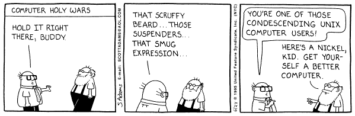

Note: This piece is adapted from a post written in the beginning of 2019
One of the fundamental things in this world that I believe in, something that I believe stimulates growth above and beyond nearly anything else government or society can do, is standardization. We might also call it platformization. The basic idea I'm driving at is that what stimulates growth in any realm is for there to be a commons: whether it be a standard specification or a standard platform.
To explain specifications, think of those for the plugs in our walls, the parts in our computer, or even the typesetting of books. This last one is not an officially recognized specification, but books absolutely do follow some general guidelines, and you'd better have a good reason to break them—specification #1: you'd better have a damn good reason to print your title backwards on the spine (being in Europe is, for example, a damn good reason).
Some very significant platforms I can think of: the highway system, the electrical grid, even the financial markets. We might call the last one an institution. (Institutions are essentially social platforms that become so ingrained in a culture that the culture builds upon it.)
Standardization allows for competition and innovation within a marketplace. It's what propels an economy forward. The highway system and the electrical grid are a common example. They're platforms that the government had to build itself because no private entity would ever commit the funds necessary to build it. And yet, once it was built, EVERYONE benefited, especially industry.
This is a common Democratic refrain; Obama essentially said this exact thing in his "you didn't build that" speech that the Republicans misquoted and exploited. The Libertarian loves to think that only private initiative is worth celebrating, or even allowing; he never has a satisfactory answer to the Democrat who asks "what about roads?"—or clean water, electricity, etc.
Here's a common Libertarian argument (perhaps more accurately described as Objectivist):
Here's the problem with this sentiment: it presupposes that the economic natural order excludes governmental intervention. This presupposition is based on a deeper presupposition: that government itself is not natural.
We can disprove this very simply: since mankind transitioned from the hunter gatherer stage, we have had governments. As a peculiarly social creature, with an incredible capacity for adaptation above, beyond, and even in direct conflict with, our genetically-predisposed behaviors, government is an integral structure in human society and culture.
My point, in ragging on this Libertarian line of thought is that standardization is the perfect example of a necessary function government serves in the economy. Jaron Lanier in his fantastic book Who Owns the Future? makes an excellent case for this. A standardized platform allows people to compete in a way they can't when the platform itself is trying to compete with them.
Specifically think of the highway system. There are tolls, yes, but just to keep the roads in good repair. If a private organization owned the highway system, businesses would have to factor the cost of tolls into the price of their goods in a way they don't now. The road owners would probably start their own transportation company, exploit their position as road-owners, and dominate the transportation market as well. The tolls would be exorbitant for everyone else, unlike reality now, where the transportation industry is very competitive. The transfer of wealth to commerce in artificially low tolls is enormous and has fueled much growth in the twentieth century (beside that fueled by advancements in technology, globalization, etc.).
Now consider Google. It's a platform, and a fairly standard one. Amazon is, too. By standard I mean that it's a platform (product, specification, etc.) used by the majority (if not super-majority) of people in the economy. We're living in a strange time in that, where in the past standards generally had to be built (or at least heavily subsidized) by governments (think railroads, electical grid, highway system, USPS), standards now are being built by private organizations. This is because of the nature of software: it does not require an incredible amount of capital and labor to build a software product that can be used by the majority of people; it just requires good design. The FAANGs are absolutely integral to the economy at this point, and at least three of them started in garages. Which is awesome, because clearly the affordability of innovation is producing incredible growth in the economy, right?
The problem is that the FAANGs are all profit-seeking entities. They are not concerned with building the best product, only the most profitable product. Because of that, they don't allow competition with their platform on their platform, and they feel entitled to compete on their platform with those utilizing their platform.
What the heck do I mean by that?
Take Google Play. The Google Play Store is a package repository for Android from
which we get all of our applications on our Android phones. The package
repository idea is fantastic, I love it; it is generally a lot more efficient
and easy to use than the Windows model of downloading .exe's and going to
various websites to get updates.
But here's the issue: Google does not allow any competition with the Google Play Store—that is, you cannot include in the Google Store an “app store app” (see F-Droid)—and Google reserves full rights to compete with people using its Store—for an example see Google Lens, distributed through the Play Store, which directly competes with the hundreds of QR Code Scanners listed in the store.
Amazon does this too: a company like Overstock.com can't exploit Amazon's marketplace to leverage their own marketplace (though it's difficult to imagine how they would; also: they do sell gift cards on Amazon), and Amazon is increasingly in competition with its Amazon Marketplace users (see, for instance, Amazon Basics).
These aren't the only reason proprietary standard platforms are bad. A bigger example is Microsoft Windows. While Windows may not be the dominant OS anymore (that belongs to Linux via Android, though the technical validity of that dominance is debatable—about the only things Linux truly dominates are servers and supercomputers) it does still dominate the desktop PC market. Windows, I can assure you, through my daily use, is a shithole. It literally breaks itself through updates all the time. What's worse is that Windows obfuscates and hides its internals from its users, which prevents those users from finding easy help to fix it. Linux, by contrast frequently breaks due to user error, but you can easily find help fixing it (linked is a question literally asked today and fixed, as well, on unix.se).
Now that I've mentioned Linux, I think it's time I explain how all this talk about standardization applies to FOSS.
Linux is a FOSS standard platform, in contrast to the proprietary standard platforms already mentioned. No, Linux is not a standard for desktop pc end users. It is a standard for serious computing: it is used as a server by nearly every company in the world. This is because, unlike Windows, when it breaks you generally don't have to reinstall it. Furthermore, it rarely breaks itself. Even Arch Linux, contrary to the memes, rarely breaks. But the real key to Linux's dominance are twofold:
Libertarians will claim to score a point on #1: the standardization of Linux (through the lineage of Unix) was built up through a lengthy history of undirected evolution. Programmers used Unix, so programmers built Unix up. As they did they created a large ecosystem of Free and Open Source Software that is standardized and well-documented. The boon to the software economy that this has produced is immeasurable. But they would be sorely mistaken, because this paragraph has neglected one simple fact: Unix was born in a skunkworks lab owned by a government-sanctioned monopoly.
Now take Git. We can leave Linux behind, since everyone knows how great the Linux success story is. But Git never ceases to amaze me. Linus Torvalds hacked it together over the course of two or so months in 2005 with the help of Junio Hamano when the proprietary system they'd been using (BitKeeper) pulled their permission. It has since become a Standard FOSS Platform. We can perhaps, rather, use the word tool. Git is a Standard FOSS Tool. And it is a miracle tool. To quote Sinclair Target:
While people sometimes grouse about its steep learning curve or unintuitive interface, Git has become everyone's go-to for version control. In Stack Overflow's 2015 developer survey, 69.3% of respondents used Git, almost twice as many as used the second-most-popular version control system, Subversion. After 2015, Stack Overflow stopped asking developers about the version control systems they use, perhaps because Git had become so popular that the question was uninteresting.
Git has assumed this level of dominance for several reasons:
The fact that it is FOSS is key. It is because of the governance nature of FOSS projects that developers trust it. It will not release broken updates, it will not start stuffing your repository with ads, and it will not incorporate money-grabbing features. It's sole purpose is to help you do your job, and be good at it.
Of course, there are bad FOSS projects, which is why it's generally better to use a FOSS project that's big.
What's fantastic about the position of Git, not just for its maintainers, but
for all of us, is that by having a large, standardized, and open source tool,
people can do ingenious things with it that they wouldn't with a proprietary
tool. Take the latest interesting use of Git I've found: pass. I just
set it up the other day and was forced to learn how to use (yet another standard
FOSS tool) gpg.
-- around here I need to acknowledge the way that most FOSS is charitable and why it exists in a free market --
I have fallen in love with FOSS software because of this quality: it may not be the easiest stuff to use, but I can trust it, practically with my life, because it is maintained by dedicated volunteers who care about it not breaking anybody's work, supported by a plethora of developers who use it and thus can help other developers who use it, and because it allows its users to do some pretty interesting things with it.
Some of my Standard FOSS Tools right now:
I have literally added in the past three days GnuPG (an implementation of the PGP standard) to this toolchain.
Even Markdown, the format I'm writing this in, which is far from standardized, though it is a standard, amazes me with its utility. (It is an open specification, but it is not maintained except in a bazaar of implementations, as John Gruber seems to prefer.)
There is something absolutely amazing about the age, pedigree, and commonality of these tools. Notice I said pedigree. Many of these tools have such storied histories, have had so many thousands of programmers hacking away at them, some of them being lovingly reimplemented so many times, that they have accreted incredible utility. Let me quote a bit from Neal Stephenson's extended essay In the Beginning... Was the Command Line:
The file systems of Unix machines all have the same general structure. On your flimsy operating systems, you can create directories (folders) and give them names like Frodo or My Stuff and put them pretty much anywhere you like. But under Unix the highest level—the root—of the filesystem is always designated with the single character “
/” and it always contains the same top level directories:
/usr /etc /var /bin /proc /boot /home /root /sbin /dev /lib /tmpEach of these directories typically has its own distinct structure of subdirectories. Note the obsessive use of abbreviations and avoidance of capital letters; this is a system invented by people to whom repetitive stress disorder is what black lung is to miners. Long names get worn down to three- or four-letter nubbins, like stones smoothed by a river.
This is not the place to explain why each of the above directories exists and what is contained in them. At first it all seems obscure; worse, it seems deliberately obscure. When I started using Linux, I was accustomed to being able to create directories wherever I wanted and to give them whatever names struck my fancy. Under Unix you are free to do that, of course (you are free to do anything), but as you gain experience with the system you come to understand that the directories listed above were created for the best of reasons and that your life will be much easier if you follow along. (Within
/home, by the way, you have pretty much unlimited freedom.)
After this kind of thing has happened several hundreds or thousand of times, the hacker understands why Unix is the way it is, and agrees it wouldn't be the same any other way. It is this sort of acculturation that gives Unix hackers their confidence in the system and the attitude of calm, unshakable, annoying superiority captured in the Dilbert cartoon. Windows 95 and MacOS are products, contrived by engineers in the service of specific companies. Unix, by contrast, is not so much a product as it is a painstakingly compiled oral history of the hacker subculture. It is our Gilgamesh epic.
What made old epics like Gilgamesh so powerful and so long-lived was that they were living bodies of narrative that many people knew by heart, and told over and over again—making their own personal embellishments whenever it struck their fancy. The bad embellishments were shouted down, the good ones picked up by others, polished, improved and, over time, incorporated into the story. Likewise, Unix is known, loved, and understood by so many hackers that it can be recreated from scratch whenever someone needs it. This is very difficult to understand for people who are accustomed to thinking of OSes as things that absolutely have to be created by a company and bought.
This is why FOSS is high culture. To quote Wikipedia, another FOSS project:
High culture encompasses the cultural objects of aesthetic value, which a society collectively esteem as exemplary art. It may also include intellectual works considered to be of supreme philosophical, historical, or literary value, as well as the education which cultivates such aesthetic and intellectual pursuits.
Can anyone possibly say that what Stephenson just described is not a cultural product of exemplary value? If we take software as art—which we easily could, given the aesthetic value applied to code by hackers everywhere—then FOSS is High Culture. And this is why I love FOSS.
Why does FOSS exist? This might be the biggest question. I mean, sure, like I've said, government or monopoly investment can easily produce good standards (Bell Labs, the US Highway System), but the Libertarians are actually right on this one. It is mostly individuals acting on their own that produce good standards. Not always, of course, but git is a great example of a group of individuals who produce an incredible product and let it be free.
We can see quite clearly, almost deductively, that once a project is FOSSed it is FOSS for good. Counter examples exist, like MySQL: it was purchased by Oracle and the original developer decided to fork it. Once software is free, it's free practically always.
"Software is a sucker's game," says Neal Stephenson. It makes sense. Software, like information, wants to be free. Once it's leaked, it's impossible to get back in the pipe. If software is open source and good, other people will use it. Once enough people use it, if the original BDFL (Benevolent Dictator For Life) gets bored of it and stops maintaining it, if the software is important enough someone will take over the project.
So the real question is why does FOSS start? It seems for a variety of reasons. Many programming languages are born out of skunkworks: Go, Rust, C, Erlang. Other projects are developed in research institutions: Scala, the World Wide Web. Some are literally developed by companies to facilitate their work: ReactJS, Hack, AngularJS. Some are developed for personal use: PHP, Linux. And others are written just because the writer can. Some time this week I want to write a script to text someone according to a slowly accelerating frequency that they need to register to vote before the deadline. Perhaps that's a noble, altruistic goal. To my mind, there's three reasons to write it:
So there's a plethora of reasons for FOSS to be created. Not all of it requires government intervention. Perhaps none of it does. But some software exists, that is standardized, and not open source. And it sucks.
When I was setting up pass recently I generated two gpg keys as well. In the
process, I learned quite a lot.
One of the things I looked into was how to protect my keys. If I lose them, I
lose access to all the passwords I have encrypted and stored in pass using
them. So I ended up finding this suggestion on security.se to print them as QR
codes. After I generated these codes, I had to test them by reading them
back into my phone. From there I left the realm of beautiful open source
software to the hellscape that is proprietary software.
As I've already mentioned, I'm a sucker for standards. I have an Android phone, and since I'm not a fan of installing excessive amounts of software (I am a pretty vicious bloat-remover) I decided to use a pre-installed Google package to scan the QR code: Google Lens.
Except, Google Lens doesn't think you'll use the QR scanner for anything except a Google search. When I scanned my key's QR code, there was no option to copy the text to a clipboard. So I had to go looking for something else and settled on Trend Micro's QR code scanner after looking through the Play Store for a while and seeing nothing but the general crap on offer there: ad-bloated mediocre pieces of software written in 10 days and rarely updated so the author can generate passive revenue. Then, I had to paste the text from the scan into a text editor so I could combine it (I had had to split my key across several QR codes because it was too much data). So I had to find a text editor. The same problem was presented as before: there aren't any good text editors for the phone. I settled on QuickEdit which had too many ads.
In the end it worked, but I was struck by how shitty the experience of getting it into my phone was in contrast to creating it. There were no standard FOSS tools on the Android Play store. Why? How is it that no one has made a decent FOSS QR Scanner, or that Google hasn't just built one into the phone yet? How is it that there isn't a built in text editor? Even Microsoft's Notepad would serve!
This is why proprietary standards suck. F-Droid has multiple QR Code scanners and multiple text editors that all look pretty respectable. Why does nothing like these exist on Google Play?
Similar problems have presented themselves to me on Amazon. Search for a quality copy of Winesburg, Ohio by Sherwood Anderson and see if you can find one. All I've found are, like the plethora of crappy apps on the Google Play Store, badly-formatted copies of a public domain book generated in 10 minutes by people exploiting Amazon's CreateSpace platform to generate passive income with minimal work.
There are competitors to these platforms, but it's really a joke to expect them to ever compete. Mastadon is awesome, but I'm not sure I see it ever taking down Twitter (we can argue that Donald Trump's use of Twitter alone has already made Twitter a target of nationalization). There are no real FOSS competitors to Facebook. DuckDuckGo might be a legitimate competitor to Google, but it's a legitimate competitor only in the sense that Linux was a legitimate competitor to Microsoft in the mid-2000's: that is to say, not really, only for power users and geeks.
Why is this? I would actually really like to understand why some services lend themselves to privatization and others to FOSS. I suppose it's a matter of costs: Amazon, Facebook, and Twitter all have to pay for server space, where Linux really doesn't. But why is it that within these platforms FOSS doesn't thrive? GitHub is a proprietary service built on an open source service and teems with open source (perhaps this is just because it's devoted to it?). I literally cannot answer this question. There's probably a dozen answers in my head and I can't settle on one.
All I'll say is this: if a private platform becomes so essential to society that it cannot be eliminated without causing serious economic problems, and yet, through profit-hungry motives proceeds to degrade its own product, it must be institutionalized. It must be standardized. Of the FAANGs, several, in particular Google, Amazon, and Facebook, are nearing the point where their continuous degradation is becoming so grave a problem that it will soon be time to nationalize them. Or at the very least regulate them as heavily as we once regulated Ma Bell.
Don't even get me started on the telecoms.
�